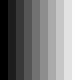
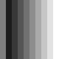
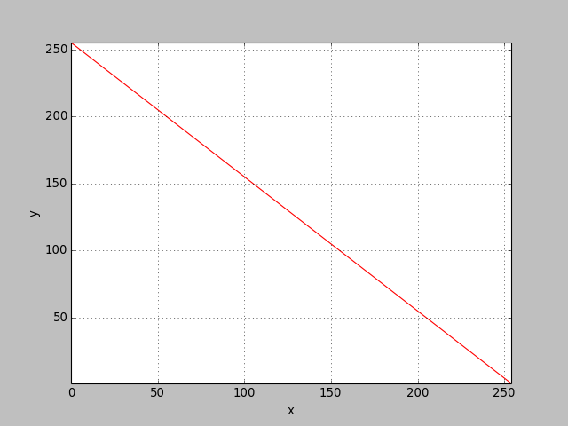
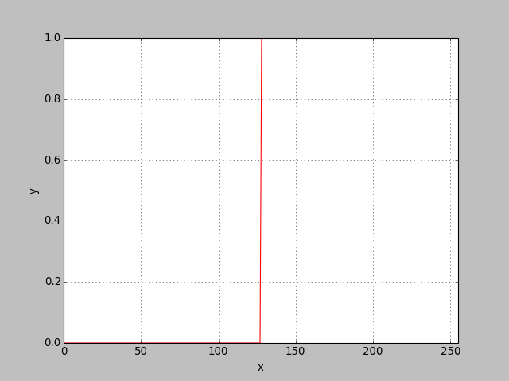
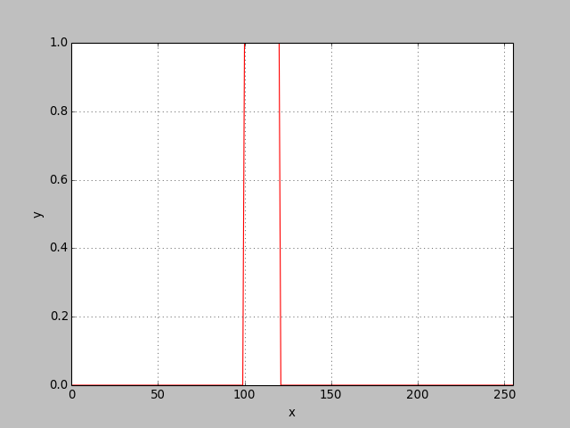
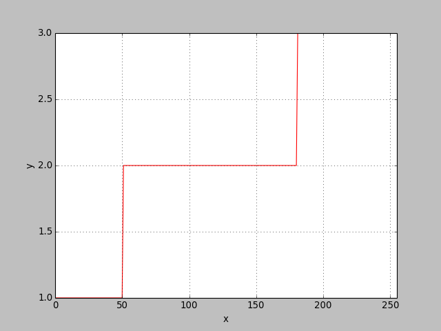
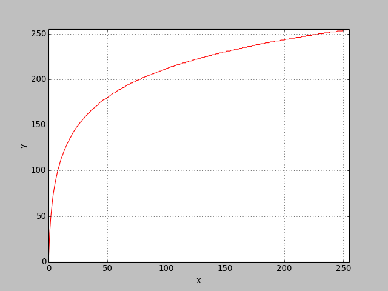

Demo iait
Illustrate the contrast transform function
Description
The intensity transform takes the form s=T(v) where v is the input gray scale value and s is the output gray scale value. This transform has many names: contrast transform, color lookup table, colormap, etc. This transform function T can be implemented by a simple table. In the examples here, we can show many of the applications one can use the contrast transform function
Script
Identity intensity function
The simplest intensity function is the identify it[x]=x. This transform is a line of 45 degrees. It makes the output image the same as the input image.
1 import ia636 as ia
2
3 f = ia.iaramp([100,100], 10, [0,255])
4 print "f info:", ia.iaimginfo(f)
5 it = arange(256)
6 print "it info:", ia.iaimginfo(it)
7 g = it[f]
8 print "g info:", ia.iaimginfo(g)
9 g1 = f # identity transform
10 print 'g is equal g1= ',(g == g1).all()
11 adshow(f, title='f')
12 adshow(g, title='g')
f info: <type 'numpy.ndarray'> (100, 100) int64 0.000000 255.000000 it info: <type 'numpy.ndarray'> (256,) int64 0.000000 255.000000 g info: <type 'numpy.ndarray'> (100, 100) int64 0.000000 255.000000 g is equal g1= True
|

f |
g |
Visualizing the intensity transform function
It is common to visualize the intensity transform function in a plot, T(v) x v.
Changing a particular color of an image
To change a given gray scale value v1 of the input image to another gray scale value s1, we can change the identity function such that T(v1)=s1. Suppose we want to change any pixel with value 0 to 127.
1 it1 = 1*it
2 it1[0] = 127
3 print 'first 5 values of it1=', it1[0:5] # show the start of the intensity table
4 g = ia.iaapplylut(f, it1)
5 g1 = (f == 0) * 127 + f
6 print 'g is equal g1= ',(g == g1).all()
7 adshow(g, title='g')
first 5 values of it1= [127 1 2 3 4] g is equal g1= True
|

g |
Negative of an image
To invert the gray scale of an image, we can apply an intensity transform of the form T(v) = 255 - v. This transform will make dark pixels light and light pixels dark.
1 v = arange(255)
2 Tn = uint8(255 - v)
3 f = adreadgray('cameraman.pgm')
4 g = ia.iaapplylut(f, Tn)
5 g1 = 255 - f
6 print 'g is equal g1= ',(g == g1).all()
7 adshow(f, title='f')
8 adshow(ia.iaplot(Tn))
9 adshow(g, title='g')
g is equal g1= True
|
f |
 |
g |
Thresholding
A common operation in image processing is called thresholding. It assigns value 1 to all pixels equal or above a threshold value and assigns zero to the others. The threshold operator converts a gray scale image into a binary image. It can be easily implemented using the intensity transform. In the example below the threshold value is 128.
1 f = adreadgray('cameraman.pgm')
2 thr = uint8(concatenate((zeros(128), ones(128))))
3 g = ia.iaapplylut(f, thr)
4 print ia.iaimginfo(g)
5 g1 = f >= 128
6 print ia.iaimginfo(g1)
7 print 'g is equal g1= ',(g == g1).all()
8 adshow(ia.ianormalize(f), title='f')
9 adshow(ia.iaplot(thr))
10 adshow(ia.ianormalize(g), title='g')
<type 'numpy.ndarray'> (256, 256) uint8 0.000000 1.000000 <type 'numpy.ndarray'> (256, 256) bool 0.000000 1.000000 g is equal g1= True
|
f |
 |
g |
Threshold band
A variation of the thresholding is when the output is one for a range of the input gray scale values. In the example below, only pixels between values 100 and 120 are turned to one, the others to zero.
1 t1 = uint8(zeros(256))
2 t1[100:121] = 1
3 g = ia.iaapplylut(f, t1)
4 adshow(ia.ianormalize(f), title='f')
5 adshow(ia.iaplot(t1))
6 adshow(ia.ianormalize(g), title='g')

f |
 |
g |
Generalized Threshold
A generalization of the previous case is to assign different values (classes) to different input ranges. This is a typical classification decision. For pixels from 0 and t1, assign 1; from t1 to t2, assign 2, etc. In the example below, the pixels are classified in three categories: class 1: dark pixels (between 0 and 50) corresponding to the cameraman clothing, class 2: medium gray pixels (from 51 to 180), and class 3: white pixels (from 181 to 255), corresponding to the sky.
1 t2 = uint8(zeros(256))
2 t2[0:51] = 1
3 t2[51:181] = 2
4 t2[181:256] = 3
5 g = ia.iaapplylut(f, t2)
6 adshow(ia.ianormalize(f), title='f')
7 adshow(ia.iaplot(t2))
8 adshow(ia.ianormalize(g), title='g')

f |
 |
g |
Crescent functions
When the intensity transform is a crescent function, if v1 >= v1 then T(v1) >= T(v2). In this class of intensity transforms, the order of the gray scale does not change, i.e., if a gray scale value is darker than another in the input image, in the transformed image, it will still be darker. The intensity order does not change. This particular intensity transforms are of special interest to image enhancing as our visual system does not feel confortable to non-crescent intensity transforms. Note the negation and the generalized threshold examples. The identity transform is a crescent function with slope 1. If the slope is higher than 1, for a small variation of v, there will be a larger variation in T(v), increasing the contrast around the gray scale v. If the slope is less than 1, the effect is opposite, the constrast around v will be decreased. A logarithm function has a higher slope at its beginning and lower slope at its end. It is normally used to increase the contrast of dark areas of the image.
1 v = arange(256)
2 Tlog = uint8((255./log(256.)) * log(v + 1))
3 f = ia.ianormalize(adreadgray('lenina.pgm'), [0, 255])
4 print "f info:", ia.iaimginfo(f)
5 print "Tlog info:", ia.iaimginfo(Tlog)
6 g = ia.iaapplylut(f, Tlog)
7 adshow(f, title='f')
8 adshow(ia.iaplot(Tlog))
9 adshow(g, title='g')
f info: <type 'numpy.ndarray'> (256, 256) uint8 0.000000 255.000000 Tlog info: <type 'numpy.ndarray'> (256,) uint8 0.000000 255.000000
|
f |
 |
g |
Normalization function
Sometimes the input image has ranges in floating point or ranges not suitable for displaying or processing. The normalization function is used to fit the range of the gray scales, preserving the linear gray scale relationship of the input image. The intensity function that provides the normalization is a straight line segment which can be defined by its two extremities. Suppose the input gray scales ranges from m1 to m2 and we want to normalize the image to the range of M1 to M2. The two extremities points are (m1,M1) and (m2,M2). The equation for the intensity normalization function is point-slope form of the line equation: T(v) - M1 =(M2-M1)/(m2-m1)*(v - m1). The function ianormalize does that.
See Also
- iaapplylut - Intensity image transform.
- ia636:ianormalize
- ia636:iaplot